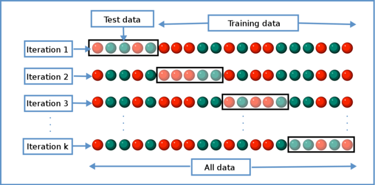

Евалуација (оцењивање) модела
За сваки проблем машинског учења неоспорно постоји више метода којe се могу користити за његово решавање. За сваки метод постоји бесконачно много модела који се могу користити, а који се добијају мењањем неког од параметара. Тренирање модела се заснива на минимизовању грешке подешавањем параметара модела (а параметри су ништа друго до реални бројеви) да би модел достигао највећу могућу тачност приликом решавања конкретног проблема. Намеће се питање како изабрати који модел је најпогоднији за задати проблем? Ово се решава евалуацијом модела.
Дакле, сви модели доступни за решавање проблема се морају на неки начин оценити, како би се изабрао најбољи. Евалуација модела јесте оцењивање квалитета модела.
Неопходно је знати да ли су предвиђања која модел направи заиста у довољној мери прецизна и, сходно томе, може ли се веровати његовим предвиђањима. Често се овај сегмент машинског учења неправедно запоставља, не посвећује му се довољно пажње и не приступа му се са довољно озбиљности, што представља велику грешку, јер од избора модела умногоме зависи успешност целог пројекта.
Технике евалуације варирају у зависности од типа проблема који се решава (нпр. да ли је у питању регресија, класификација или кластеровање), жељене поузданости оцене, количине података и својстава метода чији се модели евалуирају.
5.1 Подела скупа података и важност ове поделе
Најбитнија ствар на коју треба обратити пажњу да би се правилно оценио квалитет модела, а уједно и главно начело евалуације модела јесте подела доступног скупа података. Подаци коришћени при тренирању модела не смеју бити кришћени приликом евалуације. Дакле, погрешно је тренирати модел на читавом скупу података, или чак на било који начин користити податке за тестирање у фази тренирања модела.
Јако је важно користити нове податке приликом евалуације модела како би се спречила вероватноћа преприлагођавања скупу за тренирање (overfitting). Преприлагођавање је јако чест проблем у машинском учењу и представља ситуацију при којој модел одлично моделује податке који се налазе у скупу за тренирање, али зато показује јако лоше перформансе приликом евалуације на скупу за тестирање, односно новим подацима који му нису били доступни у фази тренинга. Дакле, у овом случају модел је научио и неке зависности које важе само на скупу за тренирање, а које се не могу пресликати на нове податке и не представњају суштинске везе које важе глобално, на свим подацима из расподеле која се моделује. Ово се може илустровати на примеру ученика који одређену лекцију научи напамет. Дакле, он ту лекцију зна потпуно прецизно („скуп података за тренирање“), али није научио и разумео зависности и правила која се односе на ту област, па ће његово знање на било ком сличном градиву („скуп података за тестирање“) бити јако лоше.
Типично раздвајање података на тренинг податке и тест податке било би коришћење 80% података за обуку и 20% података за тестирање.
Међутим, понекад је корисно проценити модел док се још гради, у циљу проналажења најбољих параметара модела. Да би се модел проценио док се још увек прави, и евентуално поправио или прилагодио, креира се трећи подскуп података који је познат као скуп за валидацију. Скуп за валидацију представља подскуп скупа података за тренинг, и користи се за процену перформанси модела у фази тренинга. Омогућава тестну платформу за фино подешавање параметара модела и избор модела са најбољим перформансама. У овом случају 60% података би било у скупу за тренинг, 20% података у скупу за валидацију и 20% података у скупу за тестирање.
5.2 Унакрсна валидација
Унакрсна валидација (Cross-Validation) представља напредну технику евалуације којом се превазилазе проблеми до којих долази при једоставној евалуацији са поделом података на скуп за тренирање и скуп за тестирање, при чему је свакако најважнији од њих чињеница да ће модел бити евалуирани само на малом подскупу свих доступних података. Ово је техника евалуације при којој ће модел бити тестиран заправо на свим доступним подацима.
К-слојна унакрсна валидација, представља технику евалуације модела при којој је оригинални скуп података подељен на к скупова једнаке величине (тзв. слојеви). Од тих к подскупова, к-1 подскупова се користи као скуп за тренинг, док један подскуп служи као скуп за тестирање. Овај поступак поделе и тестирања се понавља к пута, где је к број који бира сам корисник, најчешће 5 или 10. Процена грешке се добија као просек грешака из ових к испитивања, и тако се добија ефикасност датог модела.
На пример, када се врши петострука унакрсна валидација, подаци се прво деле на 5 делова (приближно) једнаке величине. Тренира се низ модела. Први модел се тренира користећи први подскуп као тест скуп, а преостали подскупови се користе као скуп за тренирање. То се понавља за сваки од постојећих 5 делова података. Рецимо да је у питању проблем класификације, и да је мера квалитета модела коју пратимо прецизност предвиђања, Процена прецизности модела добија се на основу просека процена за свих 5 испитивања.
Као што се види, свака тачка података мора бити у тестном скупу тачно једном и мора бити у скупу за тренинг к-1 пута. Ово значајно смањује пристраност и повећава ефикасност ове методе.
Техника унакрсне валидације се најчешће користи у случајевима када скуп података није довољно велики. Тада се на овај начин практично симулира већи скуп података. Ово је илустровано на слици.
